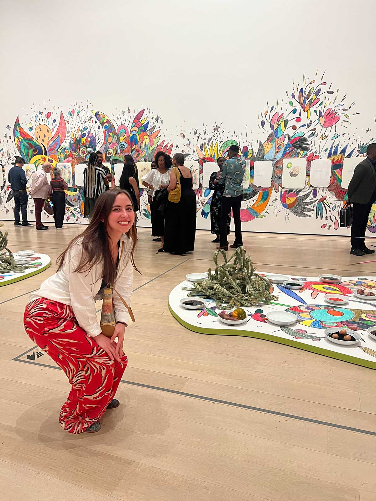

Talia Giarnella, born in Nyack, NY and raised in the scenic Hudson Valley, developed a deep connection to nature and creativity from an early age. Her childhood, spent horseback riding and exploring the outdoors, fostered a lifelong appreciation for natural beauty. A passionate cook, Talia sees food as an extension of her love language, valuing sensory-driven, meaningful experiences.
Talia's career spans hospitality , the food industry, and retail floristry, including years in wholesale floral design collaborating with luxury event companies. She has also worked in hydroponic farming in Brooklyn, growing and distributing fresh produce to local communities, and with GrowNYC, artisanal cheese sales, and biophilic-inspired event planning. Currently studying Multimedia Programming and Design, Talia merges her creative and technical expertise to craft human-centered, holistic solutions.
Outside of work, Talia supports sustainable agriculture and local businesses. She finds inspiration in vintage furniture shops, museums, and nature, where she spends much of her time. As the founder of Ragazzi Design Firm, she combines her passion for design, sustainability, and storytelling to create immersive, meaningful experiences for her clients.
